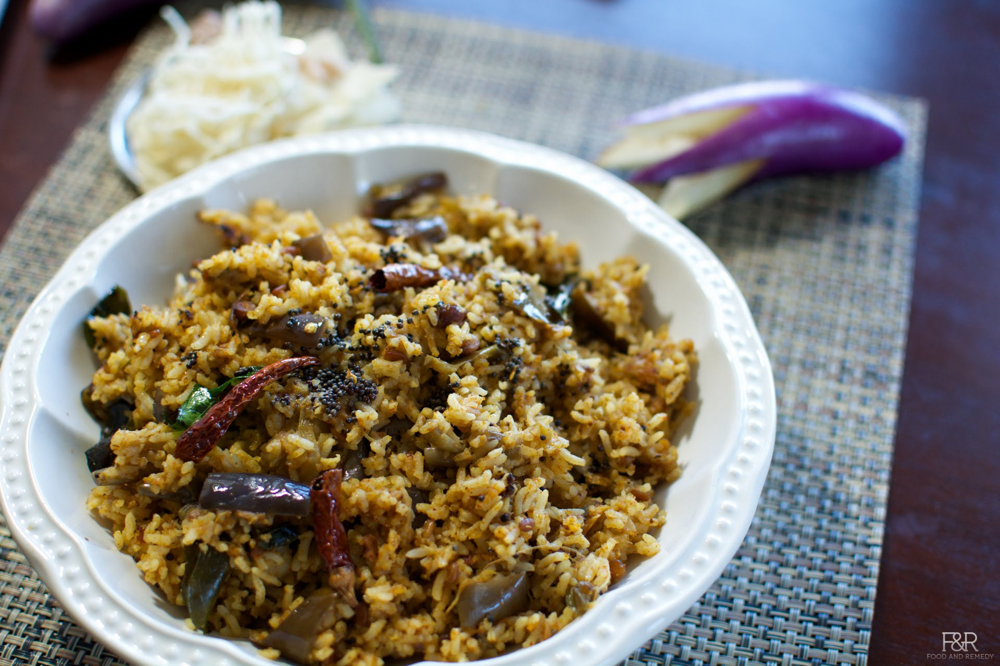

Vangi Bath

Ingredients I
1.Rice (I prefer basmati rice) - 2 cups
2.Brinjal - 2 big eggplants/ 4 medium/ 6 small (cut into big chunks)
3.Onion (optional) - 1 big (finely chopped)
4.Tomato - 1 / Sour Curd - 1/4 cup
5.Green Chillies - 2
6.Whole garam masala - 1 tblsp (1 stick cinnamon, 3 cloves, 1 star anise, 2
cardomon,1 bay leaf)
7.Oil (preferably sesame oil)/ Ghee - 2 tblsp
8.Ground nuts (optional) - 1 tbsp (roasted)
9.Turmeric powder- 1/2 tsp
10.Salt - to taste
11.Coriander leaves(Cilantro) - 2 tblsp(finely chopped)
12Asaefoetida - a pinch
Ingredients II
1.Corriander Seeds - 1 tblsp.
2.Chana dal - 1 tblsp
3.Urad dal - 1 tblsp
4.Kus kus - ½ tsp
5.Sesame seeds - 1 tblsp
6.Peppercons - 1 tsp
7.Dry red chillies - 2 or 3
8.Curry leaves - 1 strand
9.Copra or coconut(grated) - 2 tblsp
Method
1. Heat little oil in a pan and roast all the spices under
'ingredients II' till they turn golden brown.
2. Let it cool down and then grind it into a coarse powder
(vangibath powder) and keep aside.
3. Soak the rice for 10-15 minutes, cook it seperately with
required salt and keep aside.
4. Heat oil/ghee in a deep pan, add the whole garam masala
and groundnuts. Saute the onions and green chillies till it
turns golden brown.
5. Next add the tomatoes/ sour cud and saute it.
6. Add the eggplant pieces, turmeric, asaefoetida and little
salt to it.
7. Add the vangibath masala powder to this, cover and let it
cook till the eggplant (brinjal) is cooked nicely.
8. Add the cooked rice to this and mix well so that the rice
is nicely coated with the masala.
(Alternatively, if you do not have cooked rice, add this
masala along with rice and cook it.)
9. Garnish the vangi bath with finely chopped cilantro.
Serve with papad and raita.
Tips
- A tblsp of lemon juice can be added at the end for
additional flavour.
- You can cook the rice with coconut milk to make it
extra rich.
- You can make the vangibath powder in bulk and store it
for several days.